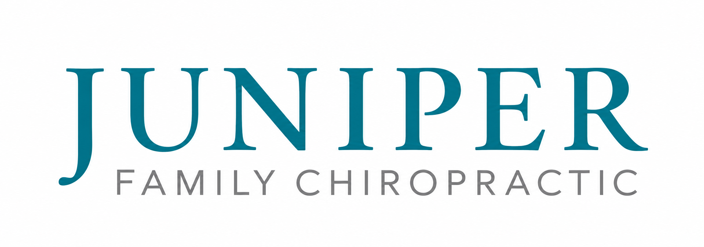

Pediatric chiropractic care
Gentle care for growing bodies
Growing up comes with plenty of physical and emotional stress from birth and developmental milestones to the everyday adventures of childhood.
Chiropractic care supports your child’s developing nervous system, helping them better adapt as they grow.

Why parents bring children in
Birth & Infancy
Birth is one of the first major physical stresses a baby experiences. Whether a baby is born vaginally or by cesarean, the birth process can place stress on a newborn’s neck and developing nervous system. Chiropractic care helps address tension and restore balance during this important stage of development.
Growth & Milestones
Rolling, sitting, crawling, walking, and running are exciting milestones that require your child’s body to continually adapt to new skills. Chiropractic care supports healthy movement as your child develops coordination, balance, and confidence in their growing body.
Everyday Childhood
Kids are made to move, play, explore, and occasionally take a tumble. Falls, playground adventures, bike rides, sports, heavy backpacks, and hours spent sitting at school all place different demands on a growing body. Chiropractic care supports healthy movement through all the physical demands that come with being a kid.
Common Reasons Parents Seek Chiropractic Care for Their Child
Babies & Infants
- Feeding difficulties
- Fussiness at the breast or bottle
- Preference for nursing on one side
- Head-turning preference
- Arching or body tension
- Difficulty burping
- Spitting up
- Constipation
- Trouble sleeping
- Recurrent ear infections
Growing Kids
- Growing pains
- Headaches
- Neck or back discomfort
- Posture concerns
- Sports-related aches and tension
- Frequent falls or injuries
- Trouble sleeping
- Constipation
- Recurrent ear infections
The Whole Child
Children experience more than just physical stress. Their nervous systems are constantly adapting to physical, chemical, and emotional stressors as they grow. Chiropractic care supports the nervous system and your child’s ability to adapt through every season of childhood.
Physical
Growth spurts, falls, sports, repetitive activities, prolonged sitting, and everyday play continually place new demands on a growing body. Supporting healthy movement and nervous system function helps children adapt to those physical demands.
Chemical
Food, medications, illness, cleaning products, and other environmental exposures are all things a child’s body must process and respond to. These chemical stressors are another part of what a developing nervous system continually adapts to.
Emotional
Starting school, changes in routine, new siblings, friendships, growing independence, and eventually puberty all bring new emotions and experiences for a child’s nervous system to process and adapt to.
What to Expect
Adjusting a baby or child looks very different from adjusting an adult. Our pediatric care is specific and designed with growing bodies in mind.
Gentle Techniques
Pediatric adjustments use gentle, specific pressure of about six ounces, similar to the amount of pressure you would use to check a tomato for ripeness. Techniques are always adapted to your child’s age, size, and comfort.
Child-Led Visits
We believe in building trust and respecting your child’s body autonomy. If your child isn’t feeling it that day, that’s okay! We’ll never force an adjustment or adjust a child against their will. We can play, get comfortable with the space, and try again another day.
Our goal is for your child to feel safe, respected, and comfortable in our office.
Clear Communication
We want you to understand what we’re seeing and why we’re making our recommendations. We’ll explain what we find, answer your questions, and make sure you feel comfortable with your child’s care.
Collaborative Care
We believe children are best supported when their care team works together. When appropriate, we’re happy to collaborate with your child’s pediatrician, lactation consultant, therapist, or other healthcare providers to help support your family’s goals.
Pediatric FAQ
What parents often ask us
Is chiropractic care safe for babies and children?
Yes. Pediatric chiropractic care uses techniques specifically adapted to your child’s age, size, and stage of development.
How soon can my baby be adjusted?
Babies can receive chiropractic care from birth. Because birth itself can place stress on a newborn’s neck and nervous system, some families choose to have their baby checked within the first days or weeks of life.
Will you pop or crack my child’s neck or back?
No. Pediatric adjustments do not involve the popping or cracking you may associate with adult chiropractic adjustments. We use specific, low-force techniques appropriate for your child’s age and size.
Why might I bring my baby to a chiropractor?
Parents bring their babies to us for many different reasons. Sometimes they notice tension patterns, such as preferring to look or nurse to one side. Other families come in with concerns about fussiness at the breast or bottle, spitting up, constipation, or sleep issues. All can be signs of stress.
We’ll listen to what you’re noticing, evaluate your baby, and explain what we find.
Does my child have to have a problem to see a chiropractor?
No. Many families choose chiropractic care as part of their child’s overall wellness.
The nervous system plays an important role in coordinating the functions throughout the body, including communicating with the immune and endocrine systems. Our goal with chiropractic care is to support healthy nervous system function as your child grows, develops, and adapts to the physical, chemical, and emotional stressors of everyday life.
What if my child doesn’t want to be adjusted?
That’s okay! We believe in respecting your child’s body autonomy and building trust. We will never force an adjustment or adjust a child against their will.
Sometimes the best visit is simply about getting comfortable with the office, building trust, and trying again another day.